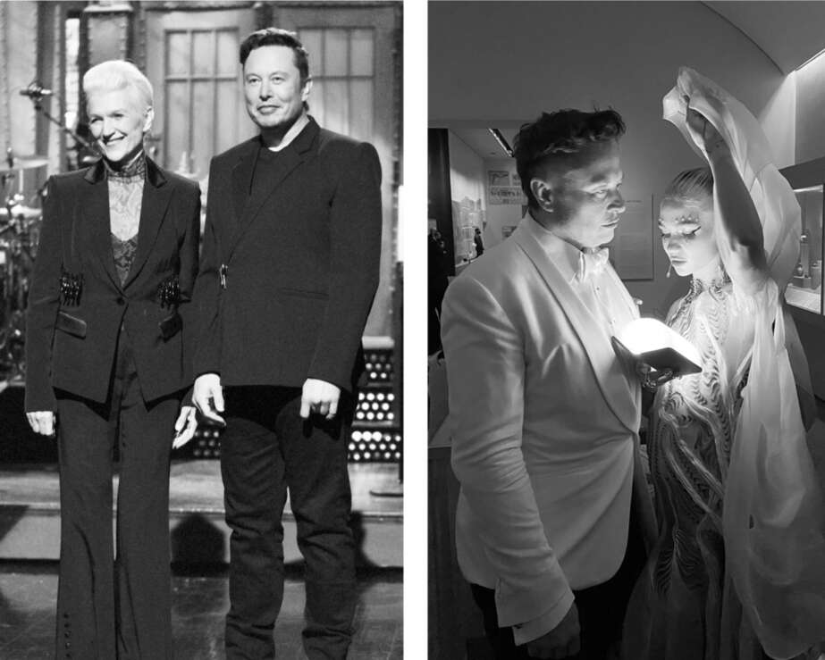

Saturday Night Live
"Với bất kỳ ai tôi đã xúc phạm, tôi chỉ muốn nói rằng, tôi đã tái tạo ô tô điện và tôi đang đưa người lên sao Hỏa bằng tên lửa. Bạn có nghĩ rằng tôi cũng sẽ là một người bình thường, dễ chịu không?" Musk cười toe toét khi anh ấy đọc lời mở đầu với tư cách là người dẫn chương trình khách mời của Saturday Night Live. Chuyển trọng lượng từ chân này sang chân khác, anh ấy đang làm khá tốt việc biến sự vụng về của mình trở nên duyên dáng.
Đó là chủ đề của anh ấy: cho thấy rằng anh ấy có thể tự nhận thức được những thiếu sót về mặt cảm xúc của mình. Với sự giúp đỡ của nhà sản xuất Lorne Michaels về cách làm cho khách mời trông đẹp mắt, anh ấy đã sử dụng buổi dẫn chương trình của mình vào tháng 5 năm 2021 để làm dịu hình ảnh của mình. "Tôi thực sự đang làm nên lịch sử tối nay với tư cách là người mắc chứng Asperger đầu tiên dẫn chương trình SNL—hoặc ít nhất là người đầu tiên thừa nhận điều đó," anh ấy nói. "Tôi sẽ không giao tiếp bằng mắt nhiều với dàn diễn viên tối nay, nhưng đừng lo, tôi khá giỏi trong việc chạy 'chế độ con người'."
Đó là Ngày của Mẹ, vì vậy Maye có cơ hội lên sân khấu. Tại buổi diễn tập hôm thứ Sáu, bà đã đọc các tấm bảng gợi ý và tuyên bố: "Cái này không buồn cười." Bà được phép ứng biến một số câu thoại của mình, và bà đã làm vậy. "Chúng tôi đã làm cho nó chân thực và hài hước hơn," bà nói. Grimes cũng xuất hiện, trong một tiểu phẩm dựa trên Super Mario Bros. Một ý tưởng mà họ đã diễn tập, dựa trên một số tweet chống lại văn hóa thức tỉnh của Musk, liên quan đến việc anh ấy đóng vai James Bond hoàn toàn thức tỉnh, nhưng nó không phù hợp và đã bị cắt khỏi chương trình.
Bữa tiệc hậu chương trình được tổ chức tại địa điểm sôi động ở trung tâm thành phố của Ian Schrager, Khách sạn Public, nơi đã đóng cửa vì COVID nhưng đã mở cửa trở lại chỉ dành cho sự kiện này. Chris Rock, Alexander Skarsgård và Colin Jost đã có mặt cùng với Grimes, Kimbal, Tosca và Maye. Elon rời đi vào khoảng 6 giờ sáng và đi cùng Kimbal và một vài người khác đến nhà của Tim Urban, nhà văn internet, nơi anh ấy thức thêm vài giờ để trò chuyện. "Anh ấy là một chàng trai mọt sách đến nỗi anh ấy không thực sự biết cách tiệc tùng khi còn nhỏ," Maye nói, "nhưng bây giờ anh ấy đã thực sự bù đắp cho điều đó."
Vào dịp sinh nhật, Musk thường tổ chức những bữa tiệc giả tưởng công phu, đáng chú ý nhất là những bữa tiệc do Talulah Riley dàn dựng. Nhưng khi bước sang tuổi 50 vào ngày 28 tháng 6 năm 2021, ông vừa trải qua cuộc phẫu thuật cổ lần thứ ba để giảm đau do chấn thương khi cố gắng vật ngã một đô vật sumo trong bữa tiệc sinh nhật lần thứ 42 của mình. Vì vậy, ông quyết định chỉ tổ chức một buổi gặp gỡ nhỏ với những người bạn thân tại Boca Chica.
Trên đường từ sân bay Brownsville, Kimbal đã mua gần hết pháo hoa tại một quầy hàng ven đường, và họ cùng bắn pháo hoa với các con trai lớn của Elon là Griffin, Kai, Damian và Saxon. Đó là pháo hoa thật, chứ không phải loại pháo hoa nhỏ, vì như Kimbal giải thích, "ở Texas, bạn có thể làm bất cứ điều gì bạn muốn."
Ngoài cơn đau ở cổ, Musk còn kiệt sức vì công việc. Ông đã dành cả ngày đi bộ trong các lều sản xuất ở Boca Chica, nơi ông trở nên tức giận về độ phức tạp của phần kết nối tầng đẩy Starship với tầng hai của tàu vũ trụ. "Có quá nhiều lỗ hổng trên lớp vỏ khiến nó trông giống như miếng pho mát Thụy Sĩ vậy!" ông phàn nàn trong email gửi Mark Juncosa. "Kích thước lỗ cho ăng-ten phải thật nhỏ - chỉ vừa đủ để luồn dây qua. Tất cả tải trọng hoặc các yêu cầu thiết kế khác phải được gán tên riêng. Không thiết kế theo kiểu tập thể."
Trong phần lớn thời gian cuối tuần sinh nhật, bạn bè để ông yên để ông có thể ngủ. Cuối cùng, ông thức dậy và tập hợp mọi người ăn tối tại Flaps, nhà hàng dành cho nhân viên mà SpaceX đã xây dựng gần bệ phóng. Sau đó, tất cả họ đến ngôi nhà nhỏ của ông và tụ tập trong căn nhà xưởng nhỏ hơn nữa ở sân sau, nơi Grimes làm việc. Căn nhà chỉ có những chiếc gối sàn lớn, và họ ngồi quây quần - Musk nằm thẳng trên sàn với một chiếc gối kê sau gáy - và trò chuyện cho đến bình minh.
Đối với Elon và Kimbal, việc tham gia Burning Man - lễ hội nghệ thuật và thể hiện bản thân khổng lồ vào cuối mùa hè ở sa mạc Nevada - từ cuối những năm 1990 đã trở thành một nghi lễ tâm linh quý giá và là cơ hội để gắn kết, khiêu vũ và tiệc tùng trong một khu cắm trại với Antonio Gracias, Mark Juncosa và những người bạn khác. Sau khi sự kiện bị hủy bỏ vào năm 2020 do COVID, Kimbal đã đứng ra gây quỹ để đảm bảo rằng nó sẽ được tiếp tục vào cuối mùa hè năm 2021. Elon đồng ý đóng góp 5 triệu đô la, với điều kiện Kimbal tham gia hội đồng quản trị.
Tại cuộc họp đầu tiên vào tháng 4 năm 2021, Kimbal đã bị sốc khi những thành viên còn lại của hội đồng quản trị quyết định hủy bỏ sự kiện mùa hè năm đó. "Mấy người đùa tôi đấy à?" anh liên tục hỏi. Anh và một số người trung thành khác của Burning Man đã tổ chức một "Renegade Burn" không chính thức tại cùng một địa điểm trên sa mạc. Khoảng hai mươi nghìn người tham dự, thay vì tám mươi nghìn người như thường lệ, đã xuất hiện, nhưng điều đó đã mang lại cho sự kiện một nét huyền bí thân mật, giống như lễ hội trong những ngày đầu. Vì không có giấy phép, họ không thể thực hiện nghi lễ đốt hình nộm gỗ khổng lồ, nghi lễ đặt tên cho lễ hội, vì vậy Kimbal đã làm việc với một người bạn để tái tạo hình ảnh người đàn ông đang cháy bằng máy bay không người lái có đèn. "Đây là một trải nghiệm tôn giáo đối với một cộng đồng trung thành," Kimbal nói. "Người đàn ông phải cháy! Và nó đã cháy."
Elon chỉ đến vào tối thứ Bảy và ở lại khu cắm trại của Kimbal, nơi tập trung xung quanh một chiếc lều hình hoa sen đủ chỗ cho bốn mươi người khiêu vũ hoặc thư giãn. Như thường lệ, luôn có một cuộc khủng hoảng bị thổi phồng - trong trường hợp này là các cuộc họp về vấn đề chuỗi cung ứng tại Tesla - được dùng làm cái cớ để ông không nghỉ quá nhiều.
Grimes đến cùng Elon, nhưng mối quan hệ của họ không được suôn sẻ. Chuyện tình cảm của anh thường xen lẫn những mâu thuẫn không lành mạnh, và mối quan hệ với Grimes cũng không ngoại lệ. Đôi khi, anh dường như thích thú với sự căng thẳng, đòi hỏi Grimes làm những việc như chỉ trích anh vì béo. Khi đến Burning Man, họ vào xe moóc và không ra ngoài hàng giờ. "Anh yêu em, nhưng anh không yêu em", anh nói với cô. Cô đáp lại rằng cô cũng cảm thấy như vậy. Họ đang mong đợi một đứa con nữa thông qua người mang thai hộ vào cuối năm, và họ đồng ý rằng sẽ dễ dàng hơn để cùng làm cha mẹ nếu họ không còn yêu đương, vì vậy họ chia tay.
Sau đó, Grimes bày tỏ cảm xúc của mình trong một bài hát cô đang sáng tác, "Player of Games", một tựa đề phù hợp trên nhiều phương diện cho một người chơi game chiến lược đỉnh cao:
Nếu em yêu anh ít hơn, em sẽ bắt anh ở lại
Nhưng anh phải là người giỏi nhất
Người chơi của trò chơi….
Em yêu người chơi game vĩ đại nhất
Nhưng anh sẽ luôn yêu trò chơi
Hơn anh yêu em
Ra khơi
Đến không gian lạnh lẽo bao la
Ngay cả tình yêu
Cũng không thể giữ anh ở lại vị trí của mình.
Met Gala, tháng 9 năm 2021
Việc chia tay với Grimes không kéo dài, hoặc ít nhất là không hoàn toàn. Thay vào đó, mối quan hệ của họ trở thành một vòng luẩn quẩn của sự đồng hành, cùng làm cha mẹ, né tránh cô đơn, thiết lập ranh giới, xa cách, chặn liên lạc, lảng tránh và quay lại với nhau.
Vài tuần sau Burning Man, họ bay từ miền nam Texas đến New York để tham dự Met Gala, một sự kiện thời trang xa hoa mà Grimes rất thích. Họ ở cùng Maye trong căn hộ nhỏ của bà ở Greenwich Village. Musk vừa cử máy bay riêng đi đón một chú chó Shiba Inu mà anh vừa mua, tên là Floki, giống chó là gương mặt đại diện của tiền điện tử Dogecoin. Anh cũng mang theo chú chó khác của mình, Marvin, không hòa thuận với Floki. Cả hai đều chưa được huấn luyện đi vệ sinh đúng chỗ. Căn hộ của Maye trở thành một gánh xiếc hai phòng ngủ.
Bộ trang phục mà Grimes chuẩn bị cho Gala là một sự tôn vinh tiểu thuyết và bộ phim khoa học viễn tưởng Dune: một chiếc váy mỏng, một chiếc áo choàng xám đen, một chiếc mặt nạ bạc và một thanh kiếm. Musk tỏ ra do dự về việc tham dự và không có gì ngạc nhiên khi anh tìm một lý do công việc để tránh đến lúc bắt đầu. Một tên lửa Falcon 9 được phóng vào đêm hôm đó, và một sự cố quan liêu đã gây ra sự chậm trễ trong việc xin phép cho tàu vũ trụ quay trở lại không phận Ấn Độ. Vấn đề này đã được giải quyết nhanh chóng và có lẽ không cần anh phải chú ý, nhưng anh thích lao mình vào những tình huống kịch tính trong công việc dù lớn hay nhỏ.
Sau Gala, anh và Grimes tổ chức một bữa tiệc tại câu lạc bộ sôi động Zero Bond ở khu NoHo của Manhattan. Leonardo DiCaprio và Chris Rock là một trong số những người nổi tiếng đến tham dự. Nhưng trong phần lớn thời gian của bữa tiệc, Musk ở trong một căn phòng phía sau, bị mê hoặc bởi một ảo thuật gia đang biểu diễn trò ảo thuật. "Tôi đến gọi anh ấy để anh ấy ra phía trước chào hỏi mọi người, nhưng anh ấy muốn ở lại xem ảo thuật gia lâu hơn", Maye nói.
Đạt đến đỉnh cao của sự nổi tiếng vào mùa hè năm 2021, Musk thấy điều đó thú vị nhưng cũng khó xử. Ngày hôm sau, họ đến một buổi triển lãm nghệ thuật mà Grimes đã thực hiện như một phần của triển lãm nghe nhìn hợp thời ở Brooklyn, với một video hoạt hình mà cô đóng vai một nữ thần chiến tranh điều hướng một tương lai loạn lạc. Từ đó, họ đi thẳng đến máy bay riêng của Musk và bay đến Cape Canaveral cho nỗ lực của SpaceX trở thành công ty tư nhân đầu tiên đưa dân thường vào vũ trụ. Thực tế có thể vượt qua cả tưởng tượng.

Với Maye trên sân khấu Saturday Night Live và Grimes tại một bữa tiệc